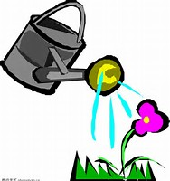

GardenWorkshop 
Home
About Us
The Plants
Discovery
FIND ALL THE ANSWERS FOR YOUR QUESTIONS HERE
* HOW TO PLANT A SUCCULENT
This is a very beginning,wish you enjoy :)
* HOW TO GROW HEALTHY SUCCULENTS INDOORS
No yard? Don't worry!
* TIPS FOR PLANTING SUCCULENTS IN CONTAINERS
Here,you can learn how to creat you own pot of succulents
* LEARN HOW TO FERTILIZE SUCCULENTS
Fertilize!This is the most important thing!
* HOW TO WATER SUCCULENT PLANTS
Water!This is the most important thing!
* HELP! MY SUCCULENT IS DYING!
Helping you to find out the problems,take it easy
* HOW TO MAKE A SUCCULENT BALL TOPIARY
Beauty your WORLD!